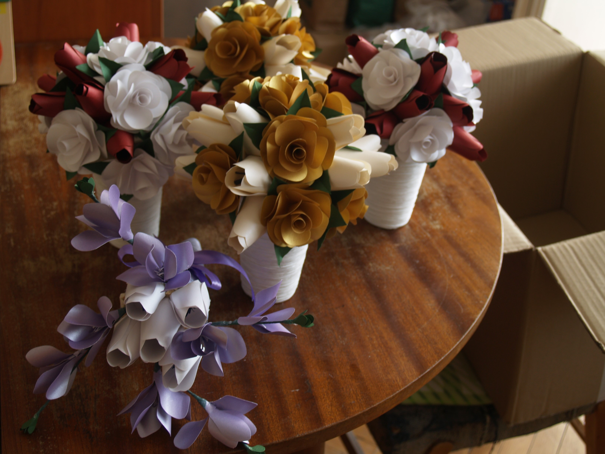
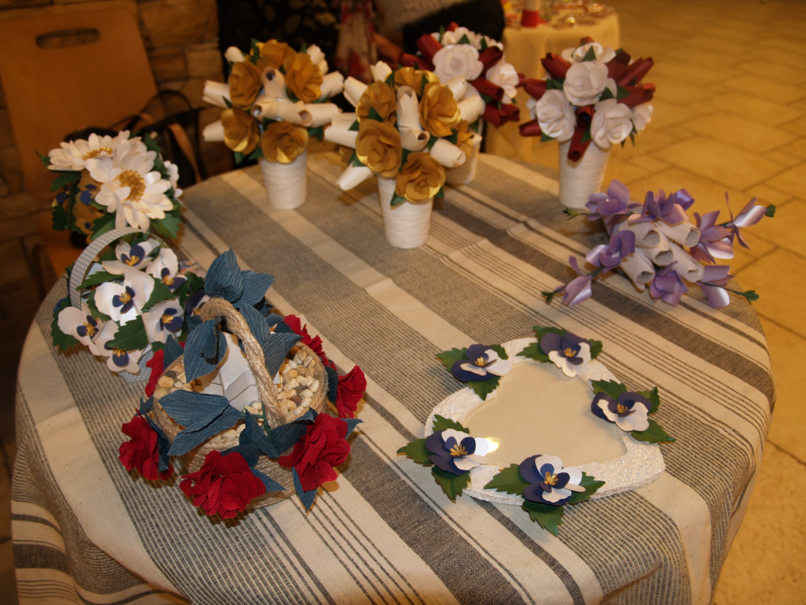

Привет на всички Вас,
Нямам търпение да споделя с Вас вълнението и емоциите, които изпитах от участието на Vessiflowers – цветя от хартия за първи път в Арт зона, на Фермерски пазар тази събота 19.03.
И така всичко започна с покана, за което съм безкрайно благодарна на организаторите!
След това? Ами след това, последва много усилен труд ... и ето ме минути преди тръгване:
Ето така изглеждаше кътчето на Vessiflowers – цветя от хартия
Вярвайте ми, ръцете ми трепереха, докато подреждах!
Беше невероятно! Имах възможност да покажа на живо моите цветя от хартия. Имах възможност да се срещна с Вас, които харесвате изработените от мен цветя. Благодаря Ви за подкрепата! Ще ви очаквам отново и на следващата Арт зона, на Фермерския пазар!